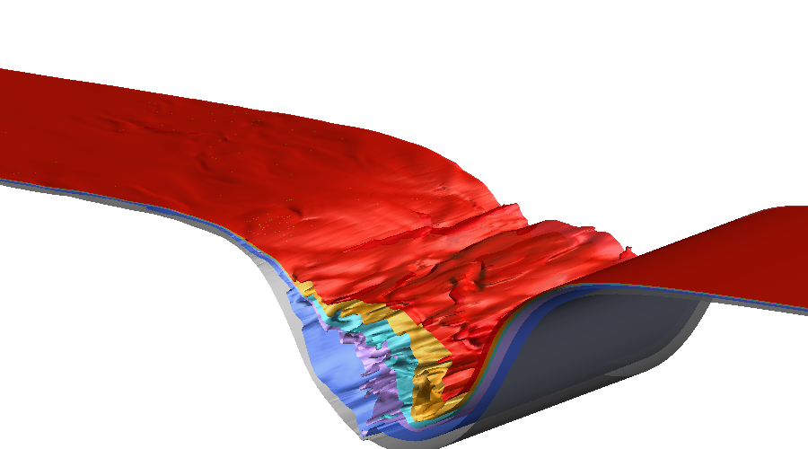

This page corresponds to the Environmental Computational Fluid Dynamics Group at Cornell University.
Click here to visit my Google Scholar.
It provides the necessary information for someone that wishes to get access to a selective Internal Solitary Wave dataset from the high resolution South China Sea simulations, that are available via Globus.
The individual needs to sign up for Globus and then ask access from Dr. Diamessis.
Contact me via email: Pete J. Diamessis
After signing up for Globus and asking for access, anyone who wishes to access the files should identify an endpoint that can receive the files, and enter the CAC endpoint as the source when using the Globus service (or use this URL) to transfer the desired files.